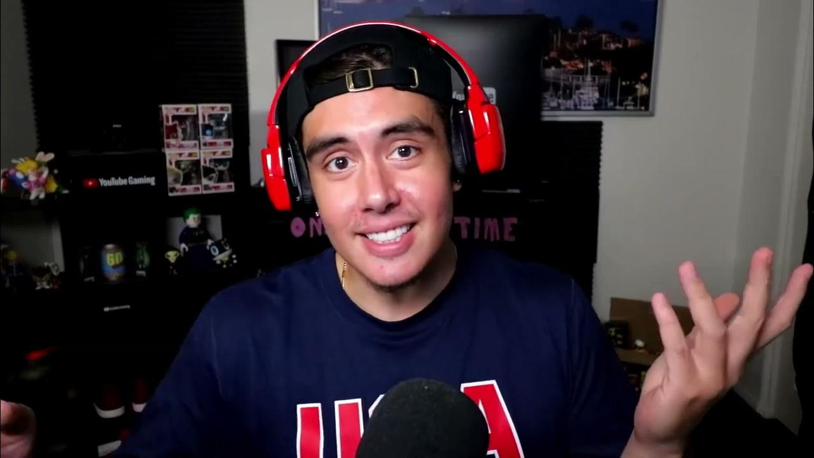
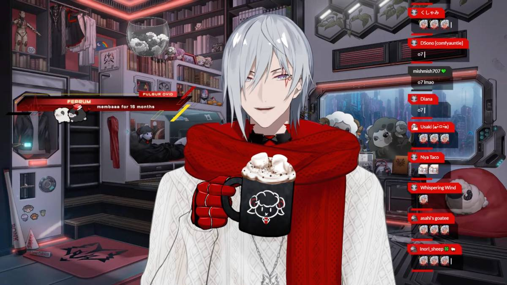

My Interests

I enjoy gaming. I play a lot of games ranging from different genres. I love story-driven games, gacha games, casual games and many more...! Except horror. But I like watching other people play horror though.
My Favourite YouTubers
 My current favourite YouTubers are Kubz Scouts (also known as 'Jay') and the Vtuber Fulgur Ovid from Nijisanji EN fifth wave, Noctyx. I love watching them because they are very entertaining and always gives me a sense of comfort. I always watch Jay's videos whenever I have free time. I occasionally tuned in to Fulgur's streams since he usually stream at 10 PM in our time and put him in the background while I do my work.